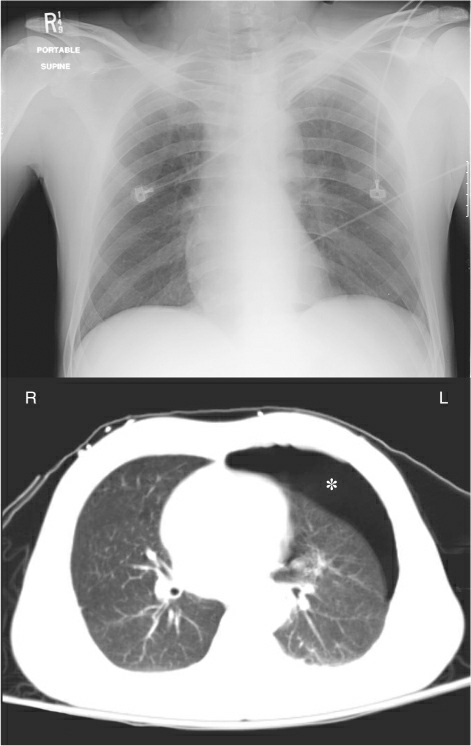

Por qué la placa se ve así
La placa suma todo lo que cruza el rayo. Mueve la postura y mira adónde viajan el aire y el líquido en el corte, y qué ve el chasis.
Corte a la altura de , visto desde los pies. Negro: aire · blanco liso: líquido · gris con borde: pulmón. suma de densidades: ilustrativo
Las placas reales: el neumotórax que la placa no ve

Rótulos de origen: ficha sale de Marino o StatPearls, con su página · fisiología general · ilustrativo: el dibujo enseña la idea; el grosor de las capas no tiene cifra en la fuente. El aire va al pulmón izquierdo y el líquido al derecho.
Para profundizar
- Neumotórax a tensión y eco pulmonar: Marino, cap. 28, pág. 29.
- Qué hacer con el líquido pleural: Marino, cap. 29, pág. 46.
- Surco costofrénico profundo: StatPearls, Pneumothorax.
Placa y corte dibujados por la app con anatomía general; sin imágenes ni contornos de ningún atlas. Figuras reales: Marino, The ICU Book, 5.ª ed. (2024).